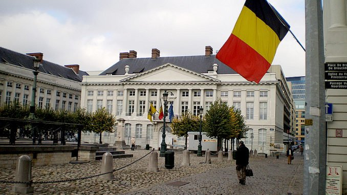
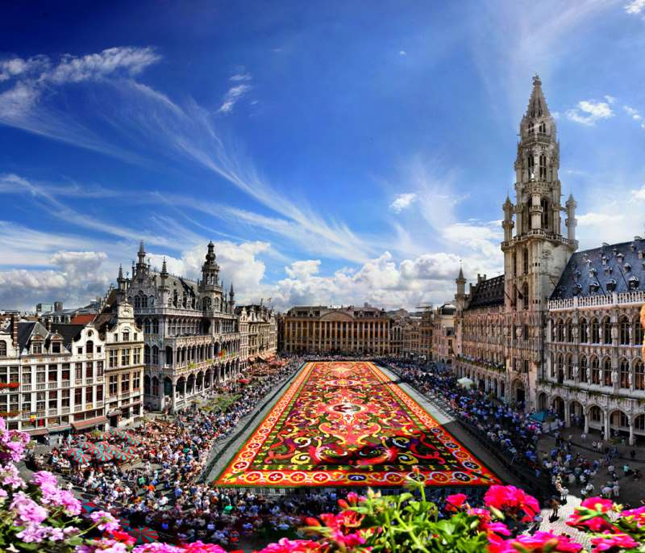

Страны Европы |
|---|
БельгияБельгия - полная официальная форма — Короле́вство Бе́льгия (нидерл. Koninkrijk België, фр. Royaume de Belgique, нем. Königreich Belgien) — государство в Западной Европе, член ЕС, ООН и НАТО. Площадь — 30 528 км², численность населения — 11 358 952 человек. Страна названа по этнониму кельтского племени — белги. Столица — Брюссель. Граничит на севере с Нидерландами, на востоке с Германией, юго-востоке с Люксембургом и с Францией на юге и западе. Омывается Северным морем на северо-западе.Форма правления — конституционная парламентская монархия, форма административно-территориального устройства — федерация. Достопримечательности страныПлощадь Гран ПласГлавная площадь Брюсселя Гран Плас является одной из самых красивых европейских площадей и именно здесь бьется духовное сердце Брюсселя. На площади располагаются исторические дома, среди которых находятся две из главных достопримечательностей Брюсселя — городская ратуша и Хлебный дом, в котором с 13-го века хранился и продавался хлеб, но затем здание было частично разрушено, но после долгой реставрации, проведенной в конце 18-го века, в нем работает городской музей Брюсселя. В остальных зданиях, расположенных на площади, работают музеи, кафе и магазины, а ежедневно на площади работает цветочный рынок. Отличительной особенностью площади Гран Плас от других европейских площадей является разноцветный ковер из живых цветов, который выкладывается здесь в августе каждого второго года. |